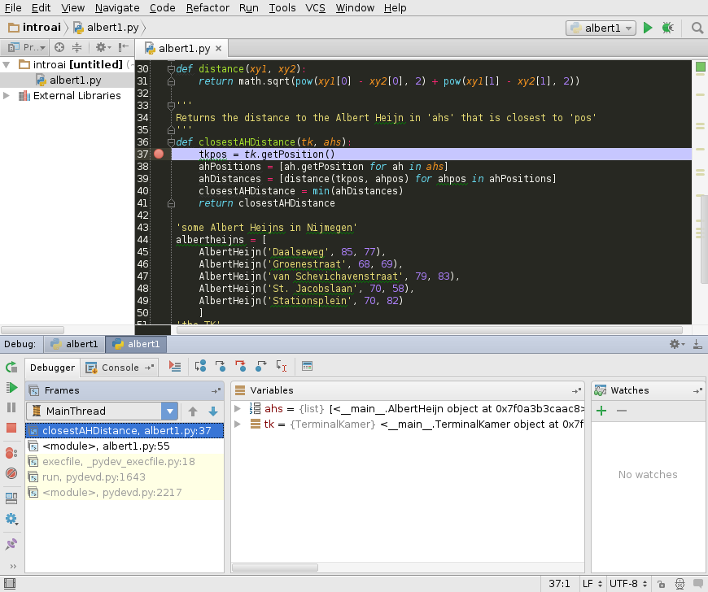

Misunderstandings always arise,
when you give instructions to Pacman.
PyCharm may help you there.
This tutorial goes into some more detail about working with Python, in particular using the IDE PyCharm. A considerable part of it is based on the manual written by our student assistant Marein Könings in 2014.
All of the files associated with this tutorial (including this tutorial itself) are contained in the zip archive you downloaded for week 1, so you do not have to download any extrra files for this week.
For this topic, you have to submit answers for problems 2
(the shopSmart function)
and problem 3 (debugging the AH shortest path code).
Submissions will be using the normal Blackboard assignment submission system, where for each assignment you should upload the .py file(s) needed for your assignment solution.
You already have some experience with so called "object-oriented (OO) languages" such as C++, Java and Schema.
Python is object-oriented too, and as such it has some specific language features to work with classes and objects.
The PacMan projects will not require extensive use of those object-oriented features,
but you will need to use objects to some extent, and so it's worth covering the basics of objects in Python.
Because this is not a course in object-oriented programming, we will only give a limited overview.
"Don't ask what you can do to your data structures, but ask what your data structures can do for you"
The essence of an object-oriented programme is that its architecture revolves around its data structures
instead of around its functionality. An object-oriented programme consists of a number of interacting
data structures called objects. The functionality of the programme is encapsulated within those objects,
instead of being "on the loose" in the programme.
Objects not only contain data, but also functions to interact with and manipulate those data:
that makes them active, self-contained, independent (but cooperating) entities playing some role within the programme.
An object does not just contain its data and functions, it encapsulates them: they can only be accessed from
outside the object in as far as the object allows it.
Direct access to object data is strongly discouraged in most OO languages: the object always has to be asked.
A well-constructed object has special functions for that purpose, often called "getters" (for reading data)
and "setters" (for changing data).
Object functions may or may not be accessible from outside the object. Those functions that are, are said to be part of
the "message set" for the object, they are "public". But other functions may be intended for use by the object itself
only: they are "private".
By encapsulating related data in objects, together with the relevant functions, inappropriate use is (largely) avoided, and related actions are kept together: only the object is made responsible for guarding, using and updating its data.
The actual objects in a running OO programme are instances of their respective class. In principle,
there can be an unlimited number of instances of the same class (just as there can be an unlimited number of
variables of the same type, e.g. integer).
The class (or rather: the class definition) contains the description for the object instances of that class.
The class definition also states (expicitly ot implicitly) which data elements and functions are accessible from
outside the object (i.e. are "public").
A class may be declared to be a sub-class (or "daughter") of another (existing) class. If so, the sub-class will
inherit all data and functions from the "mother": that is, in as far as the sub-class does not contain
any definition of itself, it is a copy of the "mother" class. Where the sub-class does contain definitions,
they overrule or add to those of the "mother" class.
Below is an example of defining a class named FruitShop.
The FruitShop class has some data, the
name of the shop and the prices per pound of some fruit, and it
provides functions, or methods, on this data.
NOTE that all functions and data members are public in the class definition below. In Python,
a name starting but not ending with "__" (two underscores) means that the function or variable is private;
all other functions and variables are public.
Many (but surely not all) Python programmers do not find public data members problematic.
ALSO NOTE the "getter" functions for providing access to the object data, even though tey are public.
It's considered good Python practice not to directly access object data (even if you can),
but to use getters / setters. The function "getName(self)" does nothing else but return the value
of "self.name", the other functions do a little bit more than just "getting".
ALSO NOTE that every data element starts with "self.", referring to the object itself:
you have to indicate explicitly that the variable is part of the object.
ALSO NOTE that every function has "self" as its first parameter. This parameter is obligatory
(and must be the first) for object functions.
ALSO NOTE the first function "__init__(self, name, fruitPrices):". This is a so called
"constructor" which is invoked every time that an object from this class is instantiated (and only then). One of the
things it does is initializing object data with values provided as parameters to the constructor function.
class FruitShop:def __init__(self, name, fruitPrices):"""name: Name of the fruit shopfruitPrices: Dictionary with keys as fruitstrings and prices for values e.g.{'apples':2.00, 'oranges': 1.50, 'pears': 1.75}"""self.fruitPrices = fruitPricesself.name = nameprint('Welcome to the %s fruit shop' % (name))def getCostPerPound(self, fruit):"""fruit: Fruit stringReturns cost of 'fruit', assuming 'fruit'is in our inventory or None otherwise"""if fruit not in self.fruitPrices:print("Sorry we don't have %s" % (fruit))return Nonereturn self.fruitPrices[fruit]def getPriceOfOrder(self, orderList):"""orderList: List of (fruit, numPounds) tuplesReturns cost of orderList. If any of the fruit are"""totalCost = 0.0for fruit, numPounds in orderList:costPerPound = self.getCostPerPound(fruit)if costPerPound != None:totalCost += numPounds * costPerPoundreturn totalCostdef getName(self):return self.name
So how do we make an object and use it?
Download the FruitShop
implementation in shop.py.
After importing the code from this file (making it accessible to other scripts)
using import shop (since
shop.py is
the name of the file), we can then create and use FruitShop objects as follows:
import shopshopName = 'the Berkeley Bowl'fruitPrices = {'apples': 1.00, 'oranges': 1.50, 'pears': 1.75}berkeleyShop = shop.FruitShop(shopName, fruitPrices)applePrice = berkeleyShop.getCostPerPound('apples')print(applePrice)print('Apples cost $%.2f at %s.' % (applePrice, shopName))otherName = 'the Stanford Mall'otherFruitPrices = {'kiwis':6.00, 'apples': 4.50, 'peaches': 8.75}otherFruitShop = shop.FruitShop(otherName, otherFruitPrices)otherPrice = otherFruitShop.getCostPerPound('apples')print(otherPrice)print('Apples cost $%.2f at %s.' % (otherPrice, otherName))print("My, that's expensive!")
You can download this code in shopTest.py
and run it like this:
[cs188-ta@midway ~]$ python shopTest.pyWelcome to the Berkeley Bowl fruit shop1.0Apples cost $1.00 at the Berkeley Bowl.Welcome to the Stanford Mall fruit shop4.5Apples cost $4.50 at the Stanford Mall.My, that's expensive!
So what just happened?
The import shop statement told Python to load all of the functions and classes in
shop.py.
The line berkeleyShop = shop.FruitShop(shopName, fruitPrices) constructs an
instance of the FruitShop class defined in
shop.py, by calling the constructor function __init__
in that class.
NOTE that we only passed two arguments to the constructor, while __init__ seems
to take three arguments: (self, name, fruitPrices).
The reason for this is that all methods in a class have self
as the first argument. The value of the variable self
is automatically set to the object itself; when
calling a method, you only supply the remaining arguments. The self
variable contains all the data (name and
fruitPrices) for the current specific
instance (similar to this in Java).
ALSO NOTE that when we call a method of an object, we have to precede the function name by the object name
and a dot: not getCostPerPound('apples') but berkeleyShop.getCostPerPound('apples').
The print statements use the substitution operator (described in the
Python
docs if you're curious).
The variables in the Fruitshop class above are all Instance Variables. Every instance (object) of the
Fruithop class has its own copies of the variables fruitPrices and
name with their own values.
In contrast, Static Variables are shared by all instances of a class. If the value of a static variable changes,
it changes for all instances (objects) of that class.
Variables that are first mentioned within the __init__ definition are instance variables,
a variable that is first mentioned before the __init__ definition is static.
The following example illustrates how to static and instance variables work in Python.
Create the file person_class.py
containing the following code:
class Person:population = 0def __init__(self, myAge):self.age = myAgePerson.population += 1def get_population(self):return Person.populationdef get_age(self):return self.age
We first compile the script:
C:/>python person_class.py
Now use the class as follows:
>>>import person_class
>>> p1 = person_class.Person(12)
>>>p1.get_population()
1
>>> p2 = person_class.Person(63)
>>> p1.get_population()
2
>>> p2.get_population()
2
>>> p1.get_age()
12
>>> p2.get_age()
63
In the code above, age
is an instance variable and population
is a static variable. population is
shared by all instances of the Person
class whereas each instance has its own age
variable.
Fill in the function shopSmart(orders,shops) in
shopSmart.py,
which takes an orderList (like the kind
passed in to FruitShop.getPriceOfOrder)
and a list of FruitShop and returns the
FruitShop where your order costs the
least amount in total. Don't change the file name or variable names,
please. Note that we will provide the shop.py
implementation as a "support" file, so you don't need to
submit yours.
Test Case:We will check that, with the following variable definitions:
orders1 = [('apples',1.0), ('oranges',3.0)]orders2 = [('apples',3.0)]dir1 = {'apples': 2.0, 'oranges':1.0}shop1 = shop.FruitShop('shop1',dir1)dir2 = {'apples': 1.0, 'oranges': 5.0}shop2 = shop.FruitShop('shop2',dir2)shops = [shop1, shop2]
The following are true:
shopSmart.shopSmart(orders1,
shops).getName() == 'shop1'
and
shopSmart.shopSmart(orders2,
shops).getName() == 'shop2'
Over the coming weeks, it will sometimes be difficult to locate the causes of problems in your code.
Especially so since the Pacman programme is large and complex, and the error messages provided by Python can
occasionally be hard to interpret.
To help you find out what's wrong in case you get an error message (which will undoubtedly happen), we'll discuss
some PyCharm techniques that can make the process a lot easier.
The bulk of the discussion will be about debug mode, but the other topics should be useful too.
We'll be using the following example to learn about these powerful techniques. This code can also be found in the file albert1.py.
import math # a built-in library containing some mathematical operations like square root ''' A class to represent an Albert Heijn with a 'name' and 'x', 'y' coordinates ''' class AlbertHeijn(): def __init__(self, name, x, y): self.name = name self.x = x self.y = y 'Returns the position as an (x,y) tupple' def getPosition(self): return (self.x, self.y) ''' A class to represent a Terminal Kamer ''' class TerminalKamer(): def __init__(self, x, y): self.x = x self.y = y def getPosition(self): return (self.x, self.y) ''' Returns the distance between points 'xy1' and 'xy2' ''' def distance(xy1, xy2): return math.sqrt(pow(xy1[0] - xy2[0], 2) + pow(xy1[1] - xy2[1], 2)) ''' Returns the distance to the Albert Heijn in 'ahs' that is closest to 'pos' ''' def closestAHDistance(tk, ahs): tkpos = tk.getPosition() ahPositions = [ah.getPosition for ah in ahs] ahDistances = [distance(tkpos, ahpos) for ahpos in ahPositions] closestAHDistance = min(ahDistances) return closestAHDistance 'some Albert Heijns in Nijmegen' albertheijns = [ AlbertHeijn('Daalseweg', 85, 77), AlbertHeijn('Groenestraat', 68, 69), AlbertHeijn('van Schevichavenstraat', 79, 83), AlbertHeijn('St. Jacobslaan', 70, 58), AlbertHeijn('Stationsplein', 70, 82) ] 'the TK' tk = TerminalKamer(75, 56) 'print the closest distance to an Albert Heijn from the TK' print(closestAHDistance(tk, albertheijns))
As you can tell, this code defines a class and some functions, then uses these to create a list of Albert Heijns and calculate the distance to the closest Albert Heijn from the TK. Before moving on, please make sure that you understand how the code does this.
The code presented here is logically correct - it will find the distance to the closest Albert Heijn. But there's a mistake in the code. By running this file in Python/PyCharm (try it!), we encounter the following error message or 'stacktrace':
Traceback (most recent call last): File "filename.py", line 55, in <module> print(closestAHDistance(tk, albertheijns)) File "filename.py", line 39, in closestAHDistance ahDistances = [distance(tkpos, ahpos) for ahpos in ahPositions] File "filename.py", line 39, in <listcomp> ahDistances = [distance(tkpos, ahpos) for ahpos in ahPositions] File "filename.py", line 31, in distance return math.sqrt(pow(xy1[0] - xy2[0], 2) + pow(xy1[1] - xy2[1], 2)) TypeError: 'method' object is not subscriptable
The first thing you should know is that the links in stacktraces (likely colored purple in PyCharm) can be clicked,
and they will take you to the location in the code that is mentioned by that line of the stacktrace.
For example, we can click the last link and see that it takes us to the last line of the following method:
''' Returns the distance between points 'xy1' and 'xy2' ''' def distance(xy1, xy2): return math.sqrt(pow(xy1[0] - xy2[0], 2) + pow(xy1[1] - xy2[1], 2))
According to the stacktrace, this line is producing the error "TypeError: 'method' object is not subscriptable".
What on earth does that mean? We'll examine it later. First of all, what if we don't know what math.sqrt does?
There's an easy way to find out.
By holding the Ctrl (or Cmd on Mac) key and clicking on any variable or method call in the code,
PyCharm will attempt to show you the definition of that variable or method.
For example, if we ctrl-click on xy1 in the 'return' statement, PyCharm will show us that it is
defined as a parameter of the distance method. And if we ctrl-click on the
math.sqrt call, PyCharm will show us the definition of that method.
The function math.sqrt is a bit special though: it's built-in, so PyCharm can only show
us the documentation for it, not the actual code. But that can already help: we can read "Return the square root of x.".
If you're still not sure at this point what a function does, well, use Google. But be sure to remember that ctrl-clicking will also work for methods that are
used inside the Pacman projects, which will help you figure out what the pre-functions you are using actually do. Exploring like this can also help you discover functions that are defined near the functions that you already know of, which may be very useful discoveries.
At the risk of stressing the obvious, Google is one of your your best resources when you're stuck
(and there are no teachers or assistants around).
However it does take some practice to become familiar enough with a certain area of expertise before you can effectively
use Google to solve problems in that area. That is to say, you have to know what to look for...
Let's see what Google can tell us about the error we got in our code. Most likely, all words in the error message
are familiar to you, except "subscriptable". Googling that
should give you a bunch of results about Python right away. When we tried, the first hit was
a question on Stack Overflow, a very handy site for programming questions: "In Python, what does it mean if an
object is subscriptable or not?"
The top answer says:
It basically means that the object implements the __getitem__() method.
In other words, it describes objects that are "containers", meaning they contain other objects.
This includes lists, tuples, and dictionaries.
Doesn't make much sense yet? Let's look at the next best answer:
Off the top of my head, the following are the only built-ins that are subscriptable:But mipadi's answer is correct; any class that implements
string: "foobar"[3] == "b"
tuple: (1,2,3,4)[3] == 4
list: [1,2,3,4][3] == 4
dict: {"a":1, "b":2, "c":3}["c"] == 3
__getitem__is subscriptable.
If we compare this information with the error message, we might understand that 'subscripting' is the method of getting
an element from a list-like variable type, using the square bracket notation with an index (e.g. [3]).
If we want to confirm this theory, we can try to Google what we now think are two related terms: 'subscript index'.
The first hit should be the Wikipedia article on Index Notation.
On this page, we can do a search (Ctrl+F) for 'subscript' to find our confirmation:
It is frequently helpful in mathematics to refer to the elements of an array using subscripts.
So indeed, subscripting has to do with the notation for getting an element from an array/list. Further down on the Wikipedia page, there's even a piece of example C code showing the square bracket notation itself.
Let's take another look at the full error.
TypeError: 'method' object is not subscriptable
Apparently some object is subscripted, which is illegal because the object is a 'method' object, whatever that means.
If we look at the line of code where the error occurs:
return math.sqrt(pow(xy1[0] - xy2[0], 2) + pow(xy1[1] - xy2[1], 2))
we find that there are, indeed, several subscripts on this line. Apparently one of these is being done on an object that does not actually allow subscripting. How do we find out which object is the culprit? And why?
We could place a print statement in the method, to show us what the variables are.
def distance(xy1, xy2): print(xy1, xy2) return math.sqrt(pow(xy1[0] - xy2[0], 2) + pow(xy1[1] - xy2[1], 2))
Running the code now shows us this:
(75, 56) <bound method AlbertHeijn.getPosition of <code.AlbertHeijn object at 0x7fb419af4f28>>
Well, that's certainly not what a position is supposed to look like, so something's wrong.
But what's going on? How did this strange object end up in the distance method?
Print statements do not really help us much.
Not only are print statements too weak for complex debugging, they can also be confusing and even dangerous.
Imagine that we were dealing with something more complex than a simple position. We might need several debug print
statements, that would be in between the regular programme output. Confusing.
Furthermore: in some cases the error might occur in pieces of code that we did not write ourselves. What if we make a mistake and mess up other peoples' code?
We need a better way of finding errors in our code - a way where we don't need to add things or change our code to find the error.
This is where pyCharm's debug mode comes in. Normally when you run a program, the computer just runs it,
without thinking that you might want to know what's happening in the code (because most of the time, you don't).
In debug mode, the computer keeps track of what is happening. It can show you what variables there are and what their
current values are.
You can pause the execution of the code when you like to see what is going on at a particular point in your code.
And you can just get a lot more information about the way the computer is running your program.
Debug mode is a key feature of an Integrated Development Environment (IDE) like PyCharm. It's one of the reasons we use IDE's instead of editing our code in Notepad or some such. And if you learn how to use debug mode in one IDE, you'll pretty much know how to do it in any one.
To use debug mode, first make sure that you have set a 'run-configuration' in PyCharm. This just means that you have taken the steps so that you can click the green arrow in the top right to run the code.

If the arrow in the top-right is not green, you can set a run-configuration by right-clicking on the
open file in the project manager to the left, and selecting "Run 'albert1.py'...".

If your project files are not in the list to the left, you can load them using the menu-option
File -> Open Directory...
Once you can run your Python file using the arrow to the top-right, you can use debug mode.
You can launch debug mode by clicking the 'bug' icon right next to the green arrow.
When a program is started in debug mode, it may be a bit slower, especially at the start, so be patient.
When an error is encountered in debug mode, the program will 'break', which means it will pause and show you
where the error occurred.
If you place the above code in a PyCharm project and run it in debug mode, you should eventually see something like this:

If you don't see any line numbers, right-click the area where they should be. There will be a popup window with options where you can enable line numbers.
The icon on line 31 indicates that an error occurred on this line, and debug mode placed a 'breakpoint' here, halting the execution, so that you can have a look at what's going on, and what the current state of all the variables is.
At the bottom of the screen, some new windows have appeared. Two of them are of special interest for now:
the 'Frames' window to the left, and the 'Variables' window in the middle.
The Variables window lists the variables that exist at the current execution state.
As you can see, it lists xy1 and xy2. xy1 is a tuple, representing a position,
just as expected. However xy2 is a 'method'.
So far, we get the same information as we saw when we printed these variables. Now, however, we can trace back where
this strange variable came from, using the Frames window.
The Frames window shows the path of methods through which the code reached the distance method.
As you can see, it starts at the bottom with a run method, going through closestAHDistance and
<listcomp> on its way to distance.
Each method in the list contains a line on which it calls the method above it.
We can click on a method in the list to see it, and also see the variables that exist in the method.
Let's click on the method <listcomp> below distance.

You need to know that <listcomp> is a method that does 'list comprehension':
the kind of stuff like x for y in z. This is exactly what we see on line 39.
We also see that distance is called on that line: this makes perfect sense, since that was the previous
level in the Frames list.
In the Variables window, we now see the variables that exist in the list comprehension.
Instead of reading the Variables window, we can also mouse-over the variables in the code, and get the same information.
For example for the variable ahpos in the list comprehension, we again see that there is a method here:

Let's go one level higher in the Frames window, to closestAHDistance, to see what variables exist there. We can now mouse-over ahPositions and see that that variable is a list with the strange method object in it.

It seems certain that something is going wrong while creating the ahPositions variable. Why is there
a 'method object' in it instead of a tuple of integers? We need to take a look at how the list is being created.
However, the list already exists at the time that the program has halted. So how can we look at what's happening
during its creation?
We saw that debug mode placed a breakpoint for us on line 31, in the distance method.
We can also place our own breakpoints to tell debug mode to halt the program and let us take a look at what's happening.
We can place a breaqkpoint on a line in the code, and the program will halt when it reaches that line.
Let's say we want to take a look at everything that is happening in the closestAHDistance method.
Let's start by placing a breakpoint on the first line of the function body, so that we can see what's happening there.
You can place a breakpoint by clicking just to the right of the number of the line where you want the break to occur.
A red ball icon will appear and the line will become red. A breakpoint only has effect in debug mode: if you run the
program using the normal green arrow, it will ignore the breakpoint.
Let's place a breakpoint on line 37. Click on the location where the red ball is in this image:

Let's run the program in debug mode (the bug icon) after placing the breakpoint. This should produce the following:

The program has started executing, but it stopped when it encountered the breakpoint. We can now see the variables that exist at this point, just as before. We can mouse-over the variables that have been created so far in the method, and also the parameters to the method.
Everything looks in order, there are no strange 'method objects' at this point yet. How do we proceed now?
Do we remove the breakpoint place a new one on the next line, then run debug mode again? That would be very tiresome.
Luckily, there are tools to tell the program to advance through the code slowly. These are located just above the
Frames and Variables windows.

You can mouse-over these icons to see what they do:
Step over: From the current execution point, run to the next line in the file, and stop there.
Step into: Enter the first method that is being called on the current line (this can bring you to another method or file), and stop there.
Step out: Run to the end of the method and go out to the method that called this method, then stop there.
Let's try clicking 'Step into' right now.

This has brought us inside the method getPosition in the class TerminalKamer, which is the method that
is called on the line we were just looking at, at the start of closestAHDistance.
Let's click 'Step out' to finish this method call and go back to closestAHDistance.
Now, take a look at the Variables window. There should be two items: ahs and
tk.
If you click 'Step over' now, the code will go to the next line in this method. That means that tkpos
will then exist in the Variables window. Try it!
We are now on line 38, where the culprit of our problem, the ahPositions list, is created.
Now that we have arrived at the place where we know something is going wrong in our code, we will start clicking 'Step into' again, so that we can see exactly what is going on. Start by clicking it once.

According to the Frames window, we are now inside a list comprehension function. This must be the list comprehension
that is happening on line 38. In our Variables window, we see only a list_iterator - this is an
internal variable used in the list comprehension.
But another 'Step into' shows us that a new variable has been created: ah, which seems to be a
normal looking AlbertHeijn:

More 'Step intos' will show more AlbertHeijns being processed by the list comprehension. After a couple more clicks, we might be surprised to find that the view changes to this:

We have exited the list comprehension function without finding anything strange.
However, there does not yet seem to be a ahPositions variable.
However when we do yet another 'Step into', it appears. And it contains the 'method object'... Where did it come from?
Although we don't know the answer yet, we are now sure that it appeared during the list comprehension,
thanks to debug mode.
When we're done looking, we can exit debug mode with the
 button to the left. The unfinished program will terminate.
button to the left. The unfinished program will terminate.
We might now want to restart debug mode to start the process over, because who knows, maybe we missed something. This means we have to hit the debug button again.
When we run through the same code again using debug mode, we might mouse-over the right part of ah.getPosition
while we are in <listcomp>. This shows us, again, that this is a 'method object'.
What this means is that we are making a list of methods, instead of a list of tuples. Why?
Because a method call needs brackets () behind it in order to evaluate itself - otherwise, it's just a
'method object': we get a list of the methods instead of a list of their results.
But you probably had figured that out already.
So the fix is to change the incorrect method call:
ahPositions = [ah.getPosition for ah in ahs]
to this:
ahPositions = [ah.getPosition() for ah in ahs]
Now, our code runs just fine. The output should be 5.385164807134504 (the closest AH is about 5.39 units from the TK).
The file albert2.py contains a different piece of code with an error. Running the code as-is results in a stacktrace. It is up to you to use the debugging features discussed above to find the error in the code and fix it. so that the desired result is given. You should upload the corrected albert2.py file as the solution to this problem.
The program presented in the file also uses the Albert Heijn class, but for a different purpose.
Namely, it tries to find the path along all of the Albert Heijns with the minimum total distance.
The start of the path can be any of the Albert Heijns.
The program does this in a very naive way. First it generates all possible paths that pass by all of the Albert Heijns.
It then calculates the total distance for each path and takes the path with the minimum total distance.
Finally it prints the names of the Albert Heijns on this path in order.
For the five central Albert Heijns in Nijmegen, using euclidean (straight line) distance, the output should be:
1 Daalseweg
2 van Schevichavenstraat
3 Stationsplein
4 Groenestraat
5 St. Jacobslaan
However, as said above, the code has an error. You should fix to code, so that the desired result is produced.
The fix can be anything you like, but it should be fairly small (not a complete rewrite of the code),
and the resulting code should work for any set of Albert Heijns.
Try to make use of the techniques discussed earlier in this assignment. At the very least, you should place a
breakpoint at a line in the code, then use the debugger to step through the lines while looking at the values of
variables at different points.
We hope that the techniques described in this tutorial will be useful in the coming projects.
Debug mode is a powerful tool, allowing you to much more easily spot problems and errors in your code.
There are a lot of features of debug mode that we haven't discussed, such as the ability to 'watch' variables
and methods and change the values of variables on-the-fly. If you want to learn more about debugging techniques and
how to use them in PyCharm, you could look here